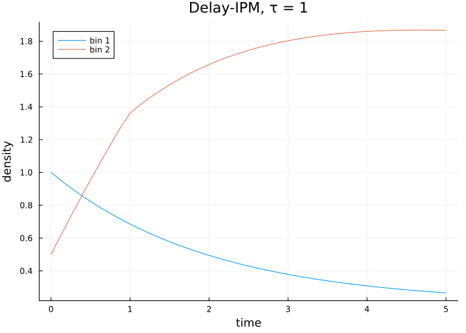
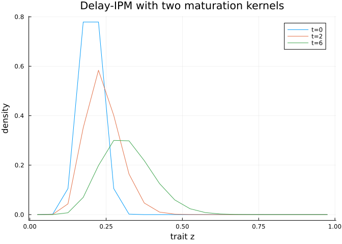

Delay-IPM dynamics
Overview
A DelayIPMProblem adds delay-generator terms to a continuous-state generator problem. The dynamics are
\[\frac{\partial n}{\partial t} = G(z, z')\, n(z, t) + \sum_k H_k(z, z')\, n(z, t - \tau_k) + s(z, t),\]
discretised onto a mesh and lowered to a SciML DDEProblem for solution with DelayDiffEq.MethodOfSteps.
Setup
using ContinuousStatePopulationDynamics
using StructuredPopulationCore
using OrdinaryDiffEq
using DelayDiffEq
using PlotsA two-bin delay-IPM
We retain a small mesh so the matrices stay legible. Mass leaks out of bin 1 into bin 2 with a fixed delay:
domain = ContinuousDomain(0.0, 1.0, 2)
G = [-0.5 0.0;
0.2 -0.1]
H = [0.0 0.0;
0.4 0.0]
delay = DelayGeneratorTerm(1.0, H)
delay isa DelayGeneratorTermtruehistory(p, t) = [2.0, 1.0]
prob = DelayIPMProblem(G, [delay], domain,
[1.0, 0.5], history, (0.0, 5.0);
source = [0.1, 0.0])
prob isa AbstractContinuousIPMProblemtrueLowering and solving
ddeprob = to_dde_problem(prob)
sol = solve(ddeprob, MethodOfSteps(Tsit5()); saveat = 0.1)
plot(sol.t, hcat(sol.u...)'; labels = ["bin 1" "bin 2"],
xlabel = "time", ylabel = "density",
title = "Delay-IPM, τ = 1")
The wrapper dispatches directly:
sol_direct = solve(prob, MethodOfSteps(Tsit5()); saveat = 5.0)
sol_direct.u[end]2-element Vector{Float64}:
0.26566805731921245
1.8665475808243686Multiple delay kernels on a finer mesh
n = 20
domain_fine = ContinuousDomain(0.0, 1.0, n)
zs = meshpoints(domain_fine)
# Instantaneous: uniform mortality plus a small drift up the trait axis
G_fine = zeros(n, n)
mu = 0.05
drift = 0.4
for i in 1:n
G_fine[i, i] -= mu
if i < n
G_fine[i, i] -= drift
G_fine[i+1, i] += drift
end
end
# Two delay kernels: short and long maturation pulses into bin n
H_short = zeros(n, n); H_short[n, 1] = 0.05
H_long = zeros(n, n); H_long[n, 1] = 0.10
prob_fine = DelayIPMProblem(
G_fine,
[DelayGeneratorTerm(1.0, H_short), DelayGeneratorTerm(3.0, H_long)],
domain_fine,
exp.(-((zs .- 0.2) ./ 0.05).^2),
(p, t) -> exp.(-((zs .- 0.2) ./ 0.05).^2),
(0.0, 6.0),
)
sol_fine = solve(to_dde_problem(prob_fine), MethodOfSteps(Tsit5());
saveat = [0.0, 2.0, 6.0])
plot(zs, sol_fine.u; labels = ["t=0" "t=2" "t=6"],
xlabel = "trait z", ylabel = "density",
title = "Delay-IPM with two maturation kernels")
remake on delay problems
prob_long = ContinuousStatePopulationDynamics.remake(prob; tspan = (0.0, 10.0))
prob_long.tspan(0.0, 10.0)Summary
DelayGeneratorTerm(τ, H)andDelayIPMProblemextend the generator API with arbitrary delay kernels.to_dde_problemlowers to SciML;MethodOfSteps(·)integrates.- The next vignette covers PSPM transport (
PSPMIPMProblem,FixedMeshUpwind,AbstractTransportDiscretization).